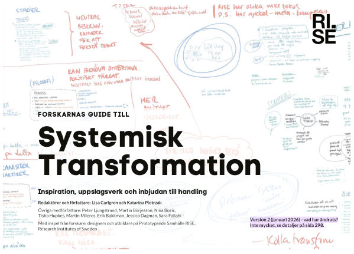

Ladda ner & referera
Ladda ner och referera till boken
Boken finns även i PDF-version för nedladdning.
Ladda ner

Forskarnas guide till Systemisk Transformation: Inspiration, uppslagsverk och inbjudan till handling
Lisa Carlgren och Katarina Pietrzak (red.) m.fl. · Version 2 (januari 2026) · 298 sidor
PDF:en publiceras i RISE publikationsdatabas DiVA och ligger inte på den här webbplatsen.
- Förlag
- RISE Research Institutes of Sweden
- ISBN
- 978-91-90036-39-6
- Permanent länk (URN)
- urn:nbn:se:ri:diva-78508
- Licens
- Creative Commons BY 4.0
Referera (APA 7)
Referens
Carlgren, L., & Pietrzak, K. (2026). Forskarnas guide till systemisk transformation: Inspiration, uppslagsverk och inbjudan till handling (Version 2). RISE Research Institutes of Sweden. https://urn.kb.se/resolve?urn=urn:nbn:se:ri:diva-78508
Hänvisning i löptext
(Carlgren & Pietrzak, 2026)
Med alla författare
Carlgren, L., Pietrzak, K., Ljungstrand, P., Börjesson, M., Bozic, N., Hupkes, T., Mileros, M., Bakkman, E., Dagman, J., & Fallahi, S. (2026). Forskarnas guide till systemisk transformation: Inspiration, uppslagsverk och inbjudan till handling (Version 2). RISE Research Institutes of Sweden. https://urn.kb.se/resolve?urn=urn:nbn:se:ri:diva-78508
Bokens egen hänvisning (s. 297): Carlgren, L. & Pietrzak, K. (2026). Forskarnas guide till systemisk transformation: Inspiration, uppslagsverk och inbjudan till handling. Första utgåvan kom i augusti 2025.
Referenser i boken
Bokens referenslista (s. 295–296). Källor som nämns på en viss sida visas också i marginalen i kapitlen.
Visa alla referenser
Álvaro Aranda-Muñoz, Nina Bozic Yams, Lisa Carlgren, Co-experiential futuring: Where speculative design and arts meet futures studies, Futures, Volume 166, 2025,
Arthur, B, (2009). The Nature of Technology. Free Press.
Asplund, J. Det sociala livets elementära former.
Bateson, G. (1979). Mind and nature: A necessary unity (Vol. 255). New York: Bantam Books
Bateson, N. (2024). Combining. Axminster, Triarchy Press
Bornemark, Jonna (2018). Det omätbaras renässans – en uppgörelse med pedanternas världsherravälde. Stockholm: Volante
Breivik-Meyer, M., Lindvert, M., Callerstig, A. C., Balkmar, D., & Alsos, G. A. (Eds.). (2025). Gendering Entrepreneurial Ecosystems: Levelling the Field. Taylor & Francis.
Burden, H., Stenberg, S., Carlgren, L., & Sjöblom, T. (2023). The Swedish policy lab for maritime autonomous surface ships. Transportation Research
Procedia, 72, 1840–1847.
Carlgren, L. (2013). Design thinking as an enabler of innovation: Exploring the concept and its relation to building innovation capabilities. PhD thesis
Carlgren, L., Elmquist, M., & Rauth, I. (2016). Framing design thinking: The concept in idea and enactment. Creativity and Innovation Management,
25(1), 38–57
Carlgren, L., & BenMahmoud-Jouini, S. (2022). When cultures collide: What can we learn from frictions in the implementation of design thinking?. Journal of Product Innovation Management, 39(1), 44-65.
Croon, A. (2023). Pilotprogram för inkluderande innovation–erfarenheter från en regional testbädd för ett jämställt och inkluderande innovationsekosystem.
Edmondson, A. (1999). Psychological safety and learning behavior in work teams. Administrative Science Quarterly, 44(2), 350–383.
Gottlieb, L. (2023) Relational sensitivity in participatory design. PhD Thesis, Mälardalen University Press
Haidt, J., & Lukianoff, G. (2018). The coddling of the American mind: How good intentions and bad ideas are setting up a generation for failure. New York, NY: Penguin Press.
Hummels, C., Trotto, A., Peeters, J., Levy, P., Alves Lino, J., & Klooster, S. (2018). Design research and innovation framework for transformative practices.
India, F. (2024) –A time we never knew / https://www.afterbabel.com/p/a-time-we-never-knew
Jarzabkowski, P., Kaplan, S., Seidl, D. and Whittington, R. (2016). On the risk of studying practices in isolation: Linking what, who, and how in strategy research. Strategic Organization, 14(3), pp.248-259.
Korzybski, A. (1933). Science and sanity: An introduction to non-Aristotelian systems and general semantics. Institute of General Semantics
Lakoff, G., & Johnson, M. (2008). Metaphors we live by. University of Chicago press.
Lowe, T., Padmanabhan, C., McCart, D., McNeill, K., Brogan, A., & Smith, M.
(2022). Human Learning Systems: A practical guide for the curious. Centre for Public Impact.
Lozeau, D., Langley, A., & Denis, J. L. (2002). The corruption of managerial techniques by organizations. Human relations, 55(5), 537-564.
McGilchrist, I. (2023). The Matter with Things. Perspectiva Press.
Meadows, D. H. (2008). Thinking in systems: A primer. Chelsea Green Publishing.
Mileros, M. D. (2025). Users Like You and Me: Understanding the User-Driven Data Economy from a Human-Centric Perspective (Doctoral dissertation, Linköping University Electronic Press). https://www.diva-portal.org/smash/record.jsf?pid=diva2%3A1941404&dswid=1348
MUCF (2023) Unga och värderingar i förändring, MUCF (Myndigheten för ungdoms- och civilsamhällesfrågor) 2023. https://www.mucf.se/attityd-och-varderingsstudie
Nam, K., Kim, H., Kang, S., & Kim, H. J. (2024). The BTS ARMY on Twitter flocks together: How transnational fandom on social media build a viable system. Telematics and Informatics, 91, 102143.
Park, S. Y., Santero, N. K., Kaneshiro, B., & Lee, J. H. (2021, May). Armed in ARMY: A case study of how BTS fans successfully collaborated to#
MatchAMillion for black lives matter. In Proceedings of the 2021 CHI conference on human factors in computing systems (pp. 1-14).
Rittel , H.J. and Webber , M.M. 1973 . Dilemmas in the general theory of planning . Policy Science , 4 : 155 – 169 .
Romanowska, J. (2014) Existential Leadership – The effect of an art-based leadership intervention on leaders and their organizations
Russell, S. (2019). Human compatible: Artificial intelligence and the problem of control. Viking.
Scharmer, C. Otto. (2009). Theory U: Leading from the Future as It Emerges. Berrett-Koehler Publishers.
Scharmer, C. Otto. (2009). Theory U: Leading from the Future as It Emerges. Berrett-Koehler Publishers
Senge, P. M. (2006). The fifth discipline: The art & practice of the learning organization. Doubleday.
Simon, H, (1969). The Sciences of the Artificial. MIT Press.
Snowden, D. J., & Boone, M. E. (2007). A leader's framework for decision making. Harvard business review, 85(11), 68.
Taylor, F. W. (1911). The principles of scientific management. New York: Harper Bros.
Trotto, A. (2023) Forms that transform practices. In Formia E., Gianfrate, V., Succini L. Design for responsible Innovation. A guide for educational process in transformation. Franco Angeli Ed. Bologna.
Twenge, J. M. (2023). Generations: The Real Differences between Gen Z, Millennials, Gen X, Boomers, and Silents—and What They Mean for America's Future. New York: Atria Books.
Twenge, J. M. (2017). iGen: Why today's super-connected kids are growing up less rebellious, more tolerant, less happy—and completely unprepared for adulthood. Atria Books.
Ungdomsbarometern. (2024). Trender 2025 – enligt unga. Stockholm: Ungdomsbarometern AB.
Zuboff, S. (2019). The age of surveillance capitalism: The fight for a human future at the new frontier of power. PublicAffairs.